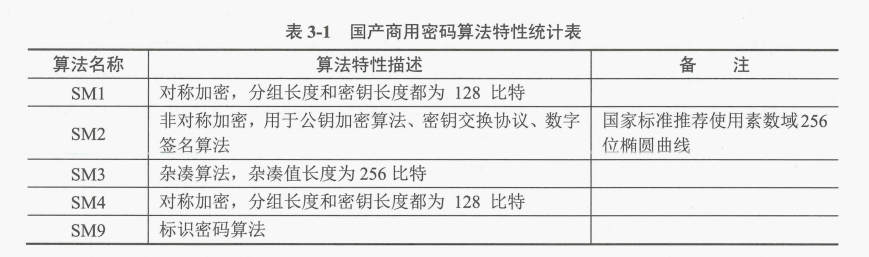

密码学基础
# 密码学基础
密码学有三大原则：扩散、混淆、雪崩效应
扩散就是让明文中的每一位影响密文中的许多位，或者说让密文中的每一位受明文中的许多位的影响．这样可以隐蔽明文的统计特性。混淆就是将密文与密钥之间的统计关系变得尽可能复杂，使得对手即使获取了关于密文的一些统计特性，也无法推测密钥。使用复杂的非线性代替变换可以达到比较好的混淆效果，而简单的线性代替变换得到的混淆效果则不理想。雪崩效应（Avalanche effect）指加密算法【尤其是块密码 (分组密码) 和加密散列函数】的一种理想属性。雪崩效应就是一种不稳定的平衡状态也是加密算法的一种特征，它指明文或密钥的少量变化会引起密文的很大变化。雪崩效应是指当输入发生最微小的改变（例如，反转一个二进制位）时，也会导致输出的剧变（如，输出中一半的二进制位发生反转）。在高品质的块密码中，无论密钥或明文的任何细微变化都应当引起密文的剧烈改变。
目前只有 RSA 算法不具有雪崩效应。
# 分组密码学原理与应用
# 原理
对称密钥密码体制又称分组密码体制、单密钥密码体制，是 加密密钥 和 解密密钥 相同 的密码体制。
加密算法 、 解密算法 是公开 的。
加密算法 必须足够 复杂 。
其 密钥必须保密 并且有足够大的密钥空间，从而使得攻击者在 截取密文 和 知道加密算法 的情况下，仍然 无法还原 出 明文 。
假设网络中有 n个 使用者，使用者之间共享 1个 秘钥，则共有 n（n-1）/2个 秘钥。
分组密码典型算法有： DES 、 IDEA 、 AES 。
# 优点
私钥密码算法 处理速度快 ，人们常常将其用作 数据加密处理 。
# 缺点
- 密钥
分配问题 - 密钥
管理问题 - 无法认证
源
# 应用
# DES【64-56】
DES 是分组加密算法，能够支持 64 比特的明文块加密，其密钥长度为 56 比特。
三重DES （Triple Data Encryption Algorithm， TDEA ），也称为 3DES 。
工作机制是使用 DES 对明文进行加密一解密一加密 操作，即对 DES 加密后的密文进行解密再加密，而解密则相反。
设 EK() 和 DK() 代表 DES 算法的加密和解密过程，代表 DES 算法使用的密钥， I 代表明文输入， O 代表密文输出。
TDEA 加密 操作如下: 加密一解密一加密
TDEA 解密 操作如下: 解密一加密一解密
标准定义了三种密钥（针对密钥 K1,K2,K3）选项：
- 密钥选项 1:
K1≠K2≠K3，强度最高，拥有3 x 56 = 168个独立的密钥位 - 密钥选项 2:
K1≠K2，但K3=K1，强度其次，拥有2 x 56 = 112个独立的密钥位 - 密钥选项 3:
K1=K2=K3，强度最弱，拥有1 x 56 = 56个独立的密钥位
# IDEA【64-128】
IDEA（International Data Encryption Algorithm）是国际数据加密算法的简记，是一个分组加密处理算法，其明文和密文分组都是 64 比特，密钥长度为 128 比特。
该算法是由来学嘉（X.J.Lai）和 Massey 提出的建议标准算法，已在 PGP 中得到应用。
既可用于加密又可用于解密 ，该算法的设计思想是混合使用来自不同代数群中的运算 。
# AES【64-128、192、256】
AES 是确定非保密的、公开的、全球免费使用的分组密码算法。
特点：
其密码 必须是没有密级 的，绝不能像商业秘密那样来保护它
算法的全部描述 必须公开披露
密码 必须可以在世界范围内免费使用
分组长度 至少为 128比特 ， 密钥长度 至少为 128、192和256比特
从参与 AES 的候选算法中，最终选择 Rijndael 作为 AES
国产密码中的
# SM1【128-128】
SM1 算法是一种对称加密算法，分组长度为 128 比特，密钥长度为 128 比特。
# SM4【128-128】
SM4 算法也是一种对称加密算法，分组长度为 128 比特，密钥长度为 128 比特。
加密算法与密钥扩展算法都采用 32 轮非线性迭代结构。
数据解密和数据加密的算法结构相同，只是轮密钥的使用顺序相反，解密轮密钥是加密轮密钥的逆序。详见 GM/T0002-2012《SM4 分组密码算法》。
# 数字信封（对称密钥 + 公钥）
数字信封是一种综合利用了 对称加密技术 和 非对称加密技术 两者的优点进行 信息安全传输 的一种技术。
- 发送方采用
对称密钥来加密信息内容 - 发送方再用接收方的
公开密钥来加密对称密钥（这部分称数字信封），将它和加密后的信息一起发送给接收方 - 接收方先用自己的
私有密钥打开数字信封，得到对称密钥 - 接收方最后使用
对称密钥解开加密信息。
数字信封既发挥了对称加密算法速度快、安全性好的优点，又发挥了非对称加密算法密钥管理方便的优点。
# 公钥密码学原理与应用
# 原理
公钥密码体制，也称 非对称密码体制 。
其基本原理是：在加密和解密的过程中使用不同的密钥处理方式。
其中， 加密密钥 可以公开 ，而只需要把 解密密钥 安全存放即可。
在安全性方面，即使密码算法公开，由加密密钥推知解密密钥也是计算不可行的。
# 优点
- 密钥
分发方便，能以公开方式分配加密密钥：如因特网中个人安全通信经常将自己的公钥发布在网页中，方便其他人用它进行安全加密 - 密钥
保管量少：所有发送方共用一个公开秘钥，只要接收方保护好解密秘钥，就能实现安全通信 - 支持
数字签名
有三种公钥密码体制类型被证明是安全和有效的，即 RSA 体制、 ELGamal 体制、 椭圆曲线 密码体制（也叫 EC ）。
# 应用
# RSA【n 的长度 1024，长期安全 2048】
RSA 算法是非对称算法，在 RSA 加密算法中， 公钥 和 私钥 都可以用于加密消息，用于 加密消息的密钥 与 用于解密消息的密钥 相反。
RSA 算法提供了一种保护网络通信和数据存储的 机密性 、 完整性 、 真实性 和 不可否认性 的方法。
目前 SSH 、 OpenPGP 、 S/MIME 、 SSL/TLS 网络协议 都依赖于RSA 进行加密和数字签名功能。
RSA 算法在 浏览器中使用 ，能够在不可信任的互联网中建立安全连接。
RSA签名验证 是 网络连接系统 中最常见的执行操作之一。
RSA 算法基于大整数因子分解的困难性
# RSA 计算
- n=p*q
- φ(n)=(p-1)*(q-1) 求 φ(n)
- e*d mod φ(n) =1 求 e d 其中之一
- c=m^e mod n 加密
- m=c^d mod n 解密
# 字符说明
- p，q 为两个素数，n 为 p，q 乘积。
- φ() 为欧拉函数，φ(n) 为小于或等于 n 的正整数中与 n 互质的数的数目【简单记住 (p-1)*(q-1) 公式就行】
- e 为随机一个整数，d 也是一个数字，题中会给出 e 和 d 其中一个不用纠结，可以用公式 3 求出来 ed 其中之一
- mod 是取余函数，例如 3*5 mod 14，取余就是 1
- c 是密文，m 是明文
- 公钥为 {e，n}，私钥为
例题 |
国产密码算法
国产密码算法是指由国家密码研究相关机构自主研发，具有相关知识产权的商用密码算法。
1999 年国务院发布实施的《商用密码管理条例》第一章第二条规定：“本条例所称商用密码，是指对不涉及国家秘密内容的信息进行加密保护或者安全认证所使用的密码技术和密码产品。” 目前，已经公布的国产密码算法主要有 SM1 分组密码算法、SM2 椭圆曲线公钥密码算法、SM3 密码杂凑算法、SM4 分组算法、SM9 标识密码算法。各国产商用密码算法的特性统计如表 3-1 所示。

# SM2【椭圆素数域 256】
SM2 算法 基于椭圆曲线 ，应用于公钥密码系统。
对于一般椭圆曲线的离散对数问题，目前只存在指数级计算复杂度的求解方法。与大数分解问题及有限域上离散对数问题相比，椭圆曲线离散对数问题的求解难度要大得多。因此，在相同安全程度的要求下，椭圆曲线密码较其他公钥密码所需的密钥规模要小得多。
SM2 算法可以用于数字签名、密钥交换、公钥加密。详见 GM/T 0009-2012《SM2 密码算法使用规范》。
# SM3【杂凑 256】
SM3 杂凑算法对长度为 l（1<24）比特的消息 m，经过填充、迭代压缩，生成杂凑值， 杂凑值输出长度为256比特 。
详见 GM/T0004-2012《SM3 密码杂凑算法》。
# Hash 函数
杂凑函数简称 Hash 函数，它能够将任意长度的信息转换成固定长度的哈希值（又称数字摘要或消息摘要），并且任意不同消息或文件所生成的哈希值是不一样的。令 h 表示 Hash 函数，则 h 满足下列条件：
（1）h 的输入可以是任意长度的消息或文件 M；
（2）h 的输出的长度是固定的；
（3）给定 h 和 M，计算 h（M）是容易的；
（4）给定 h 的描述，找两个不同的消息 M，和 M2，使得 h（M）=h（M2）是计算上不可行的。
Hash 函数的安全性，是指在现有的计算资源下，找到一个碰撞是不可能的。Hash 函数在网络安全应用中，不仅能用于保护消息或文件的完整性，而且也能用作密码信息的安全存储。
例如，网页防篡改应用。网页文件管理者首先用网页文件生成系列 Hash 值，并将 Hash 值备份存放在安全的地方。然后定时再计算这些网页文件的 Hash 值，如果新产生的 Hash 值与备份的 Hash 值不一样，则说明网页文件被篡改了。
# MD5【输入 512 - 输出 128】
MD5（Message Digest Algorithm-5）算法是由 Rivest 设计的，于 1992 年公开，RFC1321 对其进行了详细描述。
MD5 以 512位 数据块为单位来处理输入，产生 128位 的消息摘要，即 MD5 能产生 128 比特长度的哈希值。
MD5 使用广泛，常用在文件完整性检查。但是，据最新研究表明，MD5 的安全性受到挑战，王小云教授及其研究团队提出了 Hash 函数快速寻找碰撞攻击的方法，相关研究工作表明 MD5 的安全性已经不足。
# SHA【输入 512 - 输出 160】
SHA（Secure Hash Algorithm）算法由 NIST 开发，并在 1993 年作为联邦信息处理标准公布。
SHA-1 与 MD5 的设计原理类似，同样也以 512位 数据块为单位来处理输入，产生 160位 的哈希值，具有比 MD5 更强的安全性。
SHA 算法的安全性不断改进，已发布的版本有 SHA-2、SHA-3。
注意 ：SHA 算法产生的哈希值长度有 SHA-224、SHA-256、SHA-384、SHA-512 等。但一般只考 SHA-1
# SM3【输入 512 - 输出 256】
SM3 是国家密码管理局千 2010 年公布的商用密码杂凑算法标准 该算法消息分组长度为 512 比特 ，输出杂凑值长度为 256 比特 ，采用 Merkle-Damgard 结构。
# 数字签名
数字签名（Digital Signature）是指签名者使用私钥对待签名数据的杂凑值做密码运算得到的结果。
该结果只能用签名者的公钥进行验证，用于确认待签名数据的完整性、签名者身份的真实性和签名行为的抗抵赖性。
数字签名的目的是通过网络信息安全技术手段实现传统的纸面签字或者盖章的功能，以 确认交易当事人的真实身份 ， 保证交易的安全性 、 真实性 和 不可抵赖性 。
数字签名具有与手写签名一样的特点，是可信的、不可伪造的、不可重用的、不可抵赖的以及不可修改 的。
数字签名至少应满足以下三个条件：
不可否认。签名者事后不能否认自己的签名。真实性。接收者能验证签名，而任何其他人都不能伪造签名。可鉴别性。当双方关于签名的真伪发生争执时，第三方能解决双方之间发生的争执。
一个数字签名方案一般由签名算法和验证算法组成。
签名算法密钥 是 秘密 的，只有签名的人掌握；而 验证算法 则是 公开 的，以便他人验证。
典型的数字签名方案有 RSA 签名体制、Rabin 签名体制、ElGamal 签名体制和 DSS（Data Signature Standard）标准。
签名与加密很相似，一般是：
- 签名方利用
秘密密钥（私钥）对需签名的数据进行加密， - 验证方利用签名者的
公开密钥（公钥）对签名数据做解密运算。
签名与加密的不同之处在于：
加密的目的是保护信息不被非授权用户访问签名的目的是使消息接收者辨别 【信息的发送者，是谁】，信息是否被他人篡改。